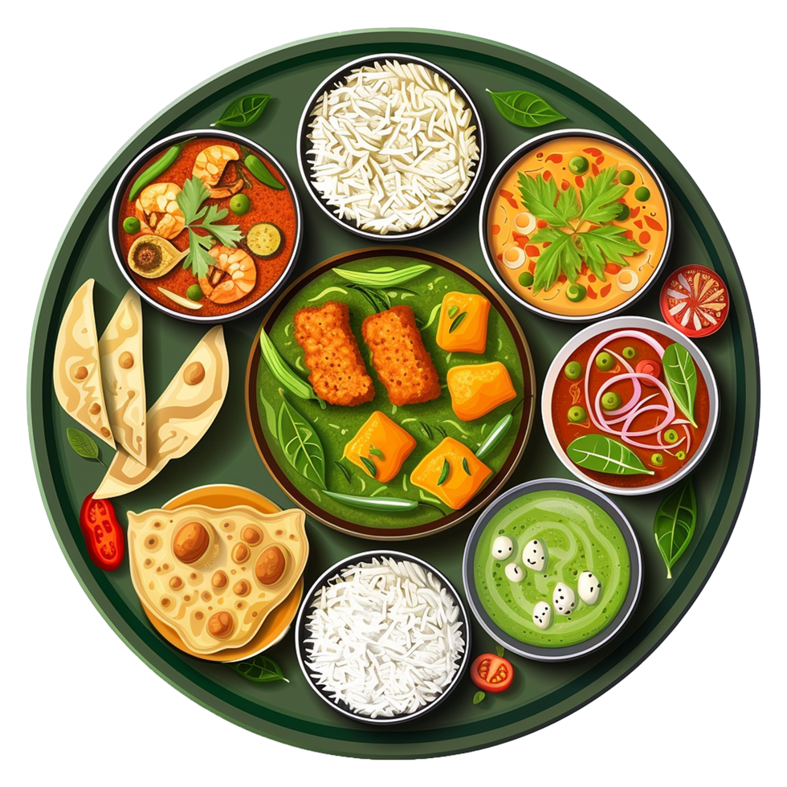
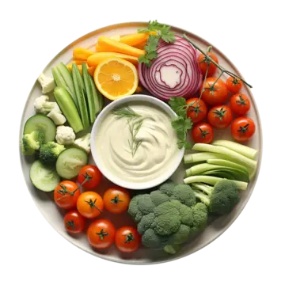
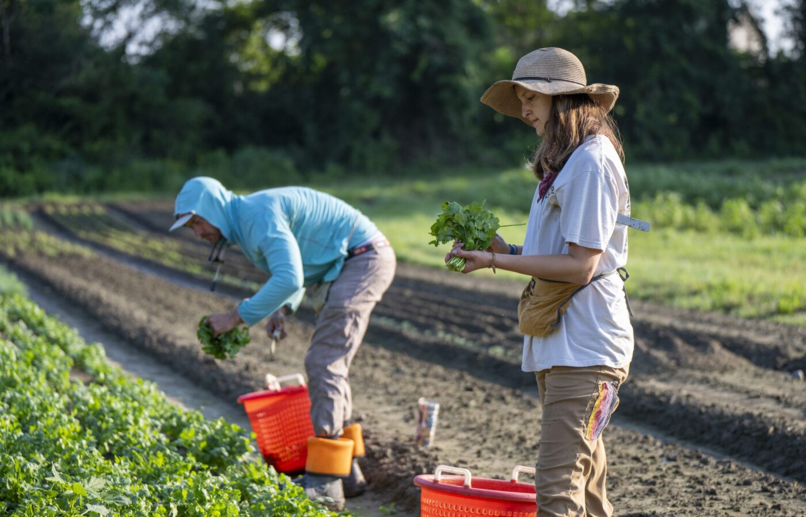

Fresh, Flavorful, Guilt-Free!
Welcome to HealthyFarm! We're more than just a restaurant—we're a celebration of fresh,
wholesome, and sustainable eating. Our plant-based menu is crafted with locally sourced
ingredients, ensuring every bite is packed with flavor and nutrition. Whether you're a
lifelong vegetarian or simply looking for healthier, eco-friendly dining options,
HealthyFarm offers a guilt-free way to enjoy delicious meals that nourish both you and the
planet.
Order Now

Guilt-Free Food
We believe that eating well should be both delicious and guilt-free. Our menu is crafted
with fresh, locally sourced ingredients, ensuring every dish is packed with nutrients and
flavor while staying kind to the planet. We take pride in serving wholesome, plant-based
meals that nourish the body without compromising on taste or sustainability. Whether
you're a dedicated vegetarian or just exploring meat-free options, HealthyFarm offers a
vibrant selection of thoughtfully prepared dishes that leave you feeling satisfied and
energized.
See Our Approach


Our Founders
Where it all began...
James and Eleanor Parker grew up in the countryside, harvesting fresh produce and preparing home-cooked meals. Witnessing the harsh realities of farm life, they chose a vegetarian lifestyle to live in harmony with nature. After moving to the city, they longed for their rural roots and noticed many lacked access to fresh, wholesome food. Determined to make a change, they founded HealthFarm in 1995—a vegetarian restaurant dedicated to nourishing people and the planet. Sourcing ingredients from local farms, they combined sustainability with flavorful, plant-based meals. HealthFarm quickly became a sanctuary from city life, welcoming farmers, families, and travelers. James and Eleanor remained deeply involved, ensuring their mission of kindness and sustainability thrived. Today, HealthFarm continues their legacy, proving that eating well and caring for the Earth can go hand in hand.